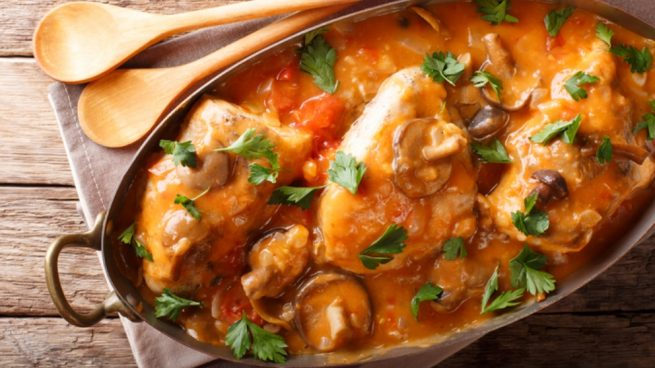

Pollo con salsa de escalivada y champiñones

Este pollo con salsa de escalivada y champiñones es una de esas recetas sencillas y deliciosas que
pueden marcar la diferencia en una cena rápida de lujo. La carne de pollo es una de las más utilizadas en las
cocinas de todo el mundo, con una cantidad de grasa baja y una buena dosis de buenas sensaciones podremos crear
un plato digno de un restaurante. La salsa de escalivada nos permitirá hacernos con un poco de color, alegría y
fibra que coronaremos con unos champiñones. Si quieres preparar un plato rápido saludable, toma nota de este
pollo con salsa de escalivada y champiñones.
Ingredientes
- 250 gr de pechugas de pollo
- 1 pimiento rojo
- 1 cebolla
- 1 berenjena
- 100 gr de champiñones
- 1 cucharada de pimentón dulce
- Sal
- Pimienta negra
- Aceite de oliva
Cómo preparar un pollo con salsa de escalivada y champiñones:
- El primer paso para conseguir crear una receta que impresiona es hacer la escalivada. Esta receta
tradicional tiene infinidad de buenas propiedades que empiezan con una cocción al horno que elimina la
grasa de cualquier otro sistema.
- Vamos a untar el pimiento rojo en aceite para que se pueda pelar más fácilmente. Lo ponemos en una
fuente para horno, añadimos la cebolla y la berenjena.
- Pondremos estos ingredientes a 180º durante unos 15 minutos hasta que estén perfectamente cocinados.
Esperamos a que enfríen para pelar el pimiento, la cebolla y la berenjena, cortaremos esta base en tiras
de más o menos el mismo tamaño.
- Ponemos la escalivada en el vaso de la batidora, lo vamos a poner con un chorrito de aceite y sal.
Trituramos todo hasta tener lista una base ideal para nuestro pollo. Le añadimos una cucharada de
pimentón para darle más color.
- Para esta receta usaremos pechugas, aunque podemos emplear cualquier parte del pollo que tengamos en la
nevera. Es una buena manera de utilizar este tipo de ingrediente de una forma distinta.
- Nos ponemos manos a la obra con las pechugas, las salpimentamos al gusto y empezamos a cocinarlas en una
sartén con un poquito de aceite. Cuando empiecen a estar listas, añadimos la salsa que tenemos
preparada.
- Los champiñones los lavamos y troceamos para incorporarlos en este momento. Dejaremos que se cocinen
durante unos minutos, cuando veamos que todos los ingredientes están bien ligados apagamos el fuego. Si
nos gusta una salsa más cremosa podemos añadirle un poco de nata para cocinar o leche evaporada en
función de la grasa que queramos incorporar al plato. Solo nos quedará probarlo con un poco de pan.